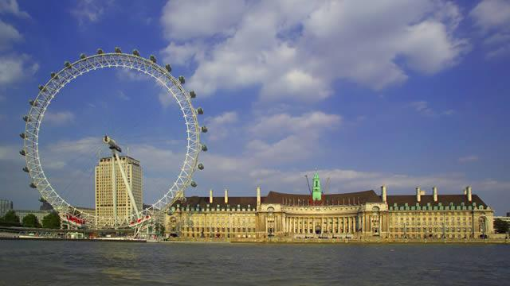

London je uistinu svetski grad, sa nekim od najpoznatijih zgrada, muzeja i galerija na svetu i istorijom dugom 2000 godina.
Kad ostavimo istoriju po strani, tu će se uvek pojaviti neki novi kafić, predstava ili koncert koji treba posetiti. Ovo je jedan od najmultietničkijih gradova, sa žiteljima iz svih delova sveta koji su se doselili ovde, tako da ćete lako naći večeru po želji – od indijske ulične hrane do pečenja u restoranu.
Šetnja Južnom obalom – krenite pored Temze od Milenijumskog točka do Tauer Bridža i proćićete pored nekoliko najpoznatijih londonskih zdanja, poput London Tauera, Glob teatra i Tejt moderna.
Pogled na grad – kako biste videli grad sa visine, možete se popeti na najvišu kupolu Katedrale Svetog Pavla ili na najvišu zgradu u gradu (i Evropi), Šard.
Posetite što više muzeja – za neke stalne izložbe u Londonskim muzejima ulaz je besplatan, tako da možete obići zaista mnogo toga. Obavezno idite u Britanski muzej, Nacionalnu galeriju ili posetite neke manje muzeje poput Muzeja ser Džona Soana ili Čerčilove odaje.
Pobegnite od gradske gužve i idite u park – u Londonu ima mnogo parkova i bašti, od čuvenih Hajd Parka i parka Svetog Džejmsa do ogromnog, brežuljkastog Hemsted Hita i skrivenih, zabačenih parkića u naseljenim četvrtima.
Upoznajte se sa istorijom Londona – možete platiti turistički aranžman o želji i obići ono što želite u Londonu – od ulica u kojima je vrebao Džek Trbosek, preko mesta gde je snimani filmovi o Hariju Poteru do olimpijskih stadiona.
Kovent garden je nekada bio londonska pijaca i mesto na kom se nalazila još uvek se nalazi na glavnom trgu. Međutim, danas je ovo deo grada poznat kao centar za zabavu i šoping, sa štandovima na kojima se umesto voća i povrća prodaju rukotvorine i suveniri, sa uličnim muzičarima i mnoštvom kafića i restorana.
Južni Kensington je mesto na koje ćete svakako otići ako se odlučite za obilazak muzeja. Tamo se nalaze Nacionalni istorijski muzej, Muzej nauke i Muzej Viktorije i Alberta (poznatiji po skraćenici V&A) i svi su relativno blizu jedan drugog. Odavde možete odšetati do Hajd Parka ili Kensington Gardesna, ili kupovati (ili samo razgledati) veoma skupe stvari u prodavnicama u Najtsbridžu.
Blumsberi je akademski centar Londona. U njemu se nalaze Londonski univerzitet, Britanski muzej i Britanska biblioteka, ali je zapravo sve počelo tokom tridesetih godina XX veka sa grupom Blumsberi, grupom intelektualaca. Na njihovim nekadašnjim kućama ćete videti plave plakate svuda po ovom kraju, kao i na trgovima i kafićima
Ne možete otići iz Londona dok ne probate…
Čuvena engleska tradicija je da se popodne pije čaj. Obično ide uz čašu šampanjca, sendviče, kolačiće i pecivo, sve servirano na elegantnom poslužavniku sa čajnikom.